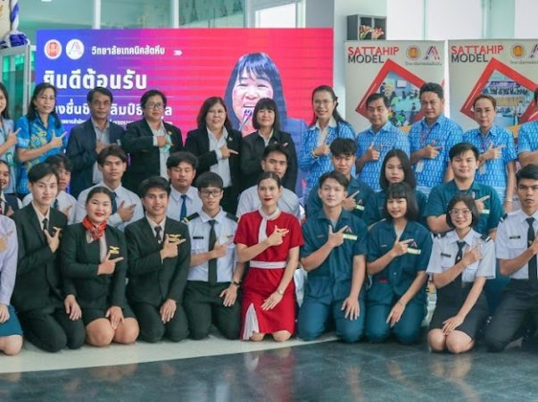

THAI-AUSTRIAN TECHNICAL COLLEGE

ปรัชญา วิสัยทัศน์ พันธกิจ
ปรัชญาวิทยาลัยเทคนิคสัตหีบ
'เรียนดี มีวินัย ใฝ่สร้างสรรค์ ขยันทำงาน ผสานคุณธรรม'
วิสัยทัศน์
'เป็นองค์กรแห่งการเรียนรู้สู่ความเป็นเลิศทางด้านวิชาชีพเพื่อการทำงาน'
พันธกิจ (Mission)
1. การบริหารจัดการเชิงรุก โดยผู้บริหารมีภาวะผู้นำ
2. การสร้างความเป็นหุ้นส่วน (Partnership)
3. การพัฒนาหลักสูตรและการจัดการเรียนการสอนให้สอดคล้องกับความต้องการของตลาดแรงงาน (Demand Driven)
4. การส่งเสริมการเรียนรู้ตลอดชีวิต (Lifelong Learning)
5. วิจัย พัฒนา และการจัดองค์การแห่งการเรียนรู้ (Research/learning organization)
6. บูรณาการปรัชญาเศรษฐกิจพอเพียงในการบริหารงานทุกภาคส่วน
7. เป็นองค์กรที่มีหน้าที่รับรองสมรรถนะของบุคคลตามมาตรฐานอาชีพ